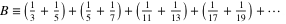

Information
Please read this entire page before beginning to write code.
Last week, you wrote a function to determine if a given number was a prime number. This week,
you are going to use a different method to create a table (an array) of prime numbers using a technique called
The Sieve of Erotoshenes.
There are 3 parts to this lab and need to be done in order. Part 1 will require the most
work. Parts 2 and 3 are fairly simple to do after completing the first part.
Part 1 of this lab requires about 10 lines of code.
Part 2 of this lab requires about 6 lines of code.
Part 3 of this lab requires about 4 lines of code.
These counts do not include variable declarations, comments, or lines with curly braces.
The method that you will use to find all of the primes in a range is called the Sieve of Eratosthenes. The idea is that you start with a list of all numbers in the range that you want to find prime numbers. So, if we want to find all of the primes between 2 and 100, we'd start with the list:2, 3, 5, 7, 11, 13, 17, 19, 23, 29, 31, 37, 41, 43, 47, 53, 59, 61, 67, 71, 73, 79, 83, 89, 97
Starting from 2, you mark 2 as being prime. Then, you cross out all multiples of 2, because any number that can be evenly divided by 2 can't be prime. Another way to say this is that any even number greater than 2 cannot be prime. (The number 4 below has a line through it, but may be difficult to see in the browser.)2, 3, 4, 5, 6, 7, 8, 9, 10, 11, 12, 13, 14, 15, . . ., 96, 97, 98, 99, 100
Then, you go to the next number that isn't crossed out and mark that as being prime. (That number is 3). Then, you cross out all multiples of 3, because any number that can be evenly divided by 3 can't be prime.2, 3,4, 5,6, 7,8, 9,10, 11,12, 13,14, 15, . . .,96, 97,98, 99,100
Then, you go to the next number that isn't crossed out and mark that as being prime. (That number is 5). Then, you cross out all multiples of 5:2, 3,4, 5,6, 7,8,9,10, 11,12, 13,14,15, . . .,96, 97,98,99,100
Those numbers are not shown in the list above, but they would be: 25, 35, 55, 65, 85, and 95.2, 3,4, 5,6, 7,8,9,10, 11,12, 13,14,15, . . .,96, 97,98,99,100
Run this animation here to see how it works. It uses an array integers with values from 1 to N. Start by clicking on "2", then "3", then "5", etc.
Here's another example using an array of 400 integers with values from 1 to 400. Start by clicking on "2", then "3", then "5", etc.
To implement this method, you will use an array that is as large as the range of primes you wish to find. (Actually, to keep it simple, range + 1 elements because we are going to include the range of 0 to N).
You start by setting all elements to 1, indicating that every number in the range is prime. In the example, the number of elements in the array is 101 (indexed 0 to 100).
You can set element 0 and 1 to 0, indicating that the number 0 and the number 1 are not prime:1, 1, 1, 1, 1, 1, 1, 1, 1, 1, 1, 1, 1, 1, 1, 1, 1, 1, 1, 1, 1, 1, 1, 1, 1, 1, 1, . . ., 1, 1, 1, 1
The number 2 is prime, it remains a 1. "Crossing out" (setting to 0) all multiples of 2 means that all even-numbered indexes will be set to 0:0, 0, 1, 1, 1, 1, 1, 1, 1, 1, 1, 1, 1, 1, 1, 1, 1, 1, 1, 1, 1, 1, 1, 1, 1, 1, 1, . . ., 1, 1, 1, 1
Continuing with 3 (which is prime) and "crossing out" (setting to 0) multiples of 3:0, 0, 1, 1, 0, 1, 0, 1, 0, 1, 0, 1, 0, 1, 0, 1, 0, 1, 0, 1, 0, 1, 0, 1, 0, 1, 0, . . ., 1, 0, 1, 0
and so on. You will continue up until, and including, the square root of the maximum number. In this case, the number is 100, so we only need to check multiples of 2, 3, 4, 5, 6, 7, 8, 9, and 10. Technically, we only have to check multiples of 2, 3, 5, and 7. The reason is that, since we've already crossed off multiples of 2, 3, and 5, we won't find any multiples of 4, 6, 8, 9, or 10. (Those multiples have already been crossed off.)0, 0, 1, 1, 0, 1, 0, 1, 0, 0, 0, 1, 0, 1, 0, 0, 0, 1, 0, 1, 0, 0, 0, 1, 0, 1, 0, . . ., 1, 0, 0, 0
When you are done, the only elements in the array with a value of 1 will correspond to prime numbers. So, if the array was named primes, these indexes would have the value 1:
In code that means that primes[2], primes[3], primes[5], primes[7], primes[11], ... primes[89], and primes[97] have the value 1. Every other element has the value 0.2, 3, 5, 7, 11, 13, 17, 19, 23, 29, 31, 37, 41, 43, 47, 53, 59, 61, 67, 71, 73, 79, 83, 89, 97
The prototype for the sieve function looks like this:
void sieve(int array[], int size);
Finally, think before you start to type anything. This is a simple task, if you think before starting. The solution requires about 10 lines of code (more or less) not counting comments, white space, or braces. You are not being graded on the number of lines you write, but if you find that you have more than 20 lines and are having trouble, you need to ask for help.
Like primes, there are an infinite number of twin primes. Using the array that you created in the first part of the lab, print out all of the twin primes in a range. The prototype looks like this:3 and 5 5 and 7 11 and 13 17 and 19 59 and 61 71 and 73
int twin_primes(const int primes[], int size);
Again, think before you start. A solution for this will need about 6 lines of code (not counting comments, white space, or braces). You aren't being graded on how many lines of code you have, but if you have over 12, you need to stop and ask for help.
Using the array that you created in the first part of the lab, calculate Brun's Constant. The prototype looks like this:
 = 1.902160583104...
double brun_constant(const int primes[], int size);
If you've completed the twin_primes function, then calculating Brun's Constant is very simple.
Here are some values produced when running the program with arrays of different sizes. (The actual prime numbers and twin primes have been left out to keep it readable.)
A solution for this will need about 4 lines of code (not counting comments, white space, or braces). You aren't being graded on how many lines of code you have, but if you have over 10, you need to stop and ask for help.25 primes found between 0 and 100. 8 twin primes found between 0 and 100. Brun's constant with 8 twin primes is 1.330990365719. 168 primes found between 0 and 1000. 35 twin primes found between 0 and 1000. Brun's constant with 35 twin primes is 1.518032463560. 1229 primes found between 0 and 10000. 205 twin primes found between 0 and 10000. Brun's constant with 205 twin primes is 1.616893557432. 9592 primes found between 0 and 100000. 1224 twin primes found between 0 and 100000. Brun's constant with 1224 twin primes is 1.672799584828. 21336326 primes found between 0 and 400000000. 1507733 twin primes found between 0 and 400000000. Brun's constant with 1507733 twin primes is 1.768841803744.
The command line to build the program will be:
Students using Linux or Mac OS X will use this line:gcc -Werror -Wall -Wextra -ansi -pedantic -O main.c sieve.c -o sieve
Note that the only C library header files that you are to include in your C file is stdio.h (for printf) and math.h (for sqrt). You won't need any others). I've included sieve.h for you so you have access to the defines of TRUE and FALSE.gcc -Werror -Wall -Wextra -ansi -pedantic -O main.c sieve.c -o sieve -lm
Don't forget that you may need to use the --strip-trailing-cr option with diff.
| main.c (You will have to modify the SIZE value to test larger arrays.) | Start with this sieve.c file |
|---|---|
|
You should put this code into sieve.h: |
Sample output: (Download the output files. DO NOT save the web pages.)
For those that want a little more of a challenge, how high can you go with the prime numbers? Meaning, how big can you make SIZE? What's the problem? What's a solution to the problem? (Yes, it crashes, but why?)